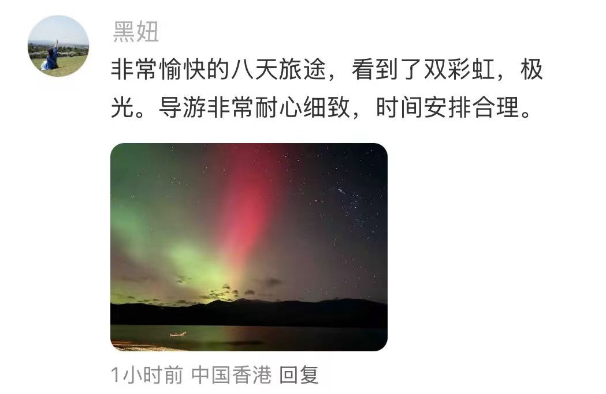

王女士
「带父母和孩子走完全程都不累。Peter 会看老人状态调整节奏，路上讲南岛故事，孩子听得入迷。不是导游式讲解，像朋友带着逛。」
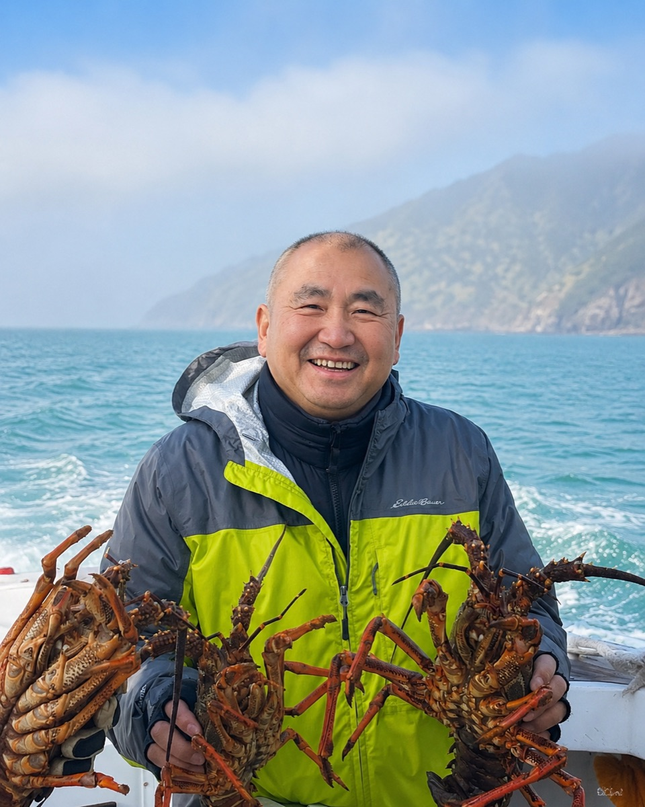
Guest Voices
这些年带团过程中，
最珍贵的不是走过多少公里路，
而是客人留下的一句句认可与信任。
Featured Reviews
来自小红书、微信、Google 与客人朋友圈的真实反馈。

「带父母和孩子走完全程都不累。Peter 会看老人状态调整节奏，路上讲南岛故事，孩子听得入迷。不是导游式讲解，像朋友带着逛。」
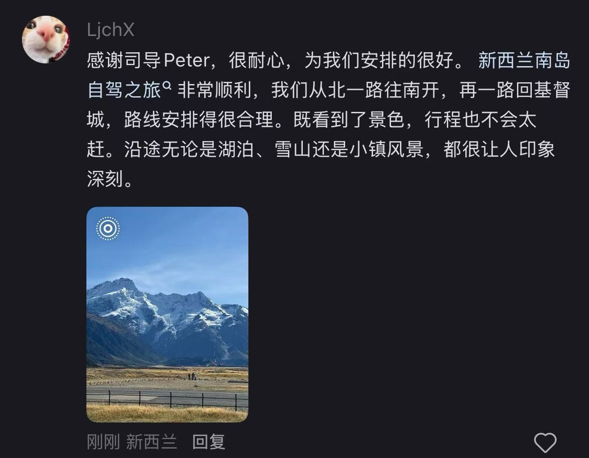
「奔驰商务车非常稳，四个好友行李很多也放得下。Peter 开车太稳了，库克山到皇后镇那段盘山路，全程没人晕车。已在微信推荐给两拨朋友。」
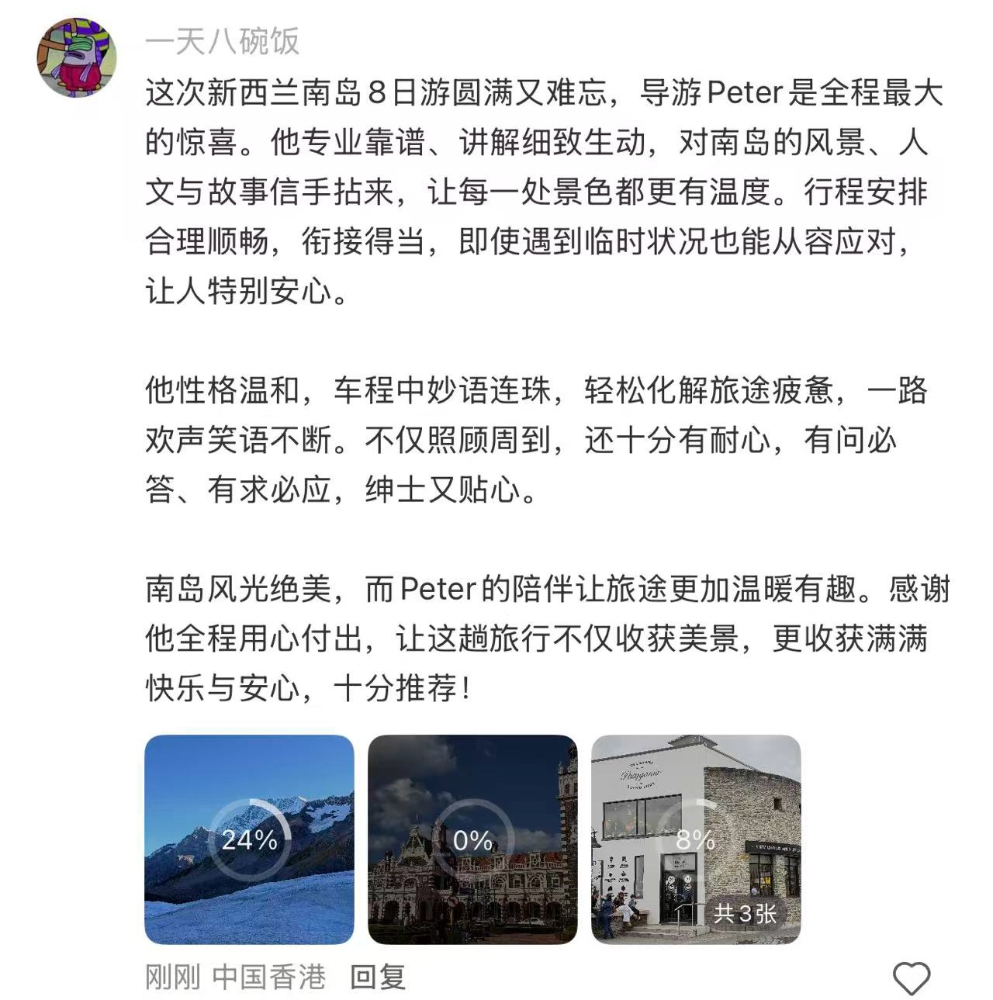
「妈妈腿脚不好，Peter 每到一个景点都会先看哪里好走、哪里能休息。观鲸那天风大，他提前准备了晕船贴。这种细心，大团根本做不到。」
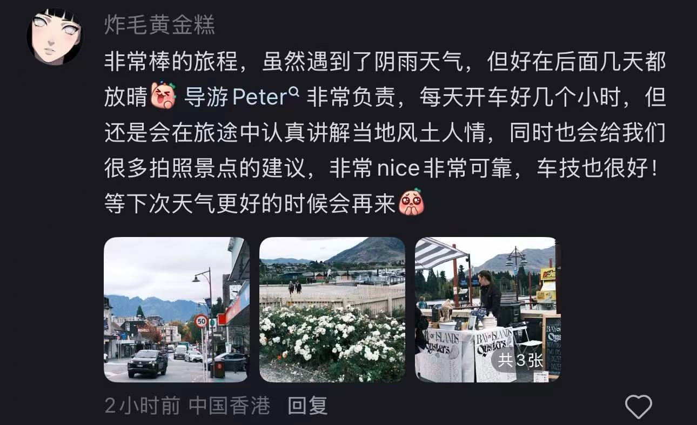
「2024 年来过一次，2025 年带全家再来。Peter 记得我们上次喜欢特卡波，这次特意多留了一晚拍银河。回头客，因为信得过。」
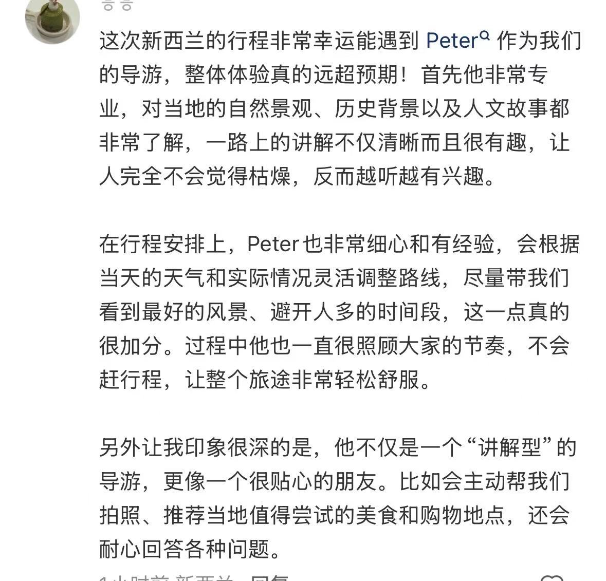
「Peter 知道每个机位的最佳时间，牧羊人教堂的银河、普卡基湖的晨雾，都是他带队拍出来的。自己找攻略绝对找不到这些点。」
By Theme
按大家最常提到的方面分类，方便您快速了解 Peter 的优势。
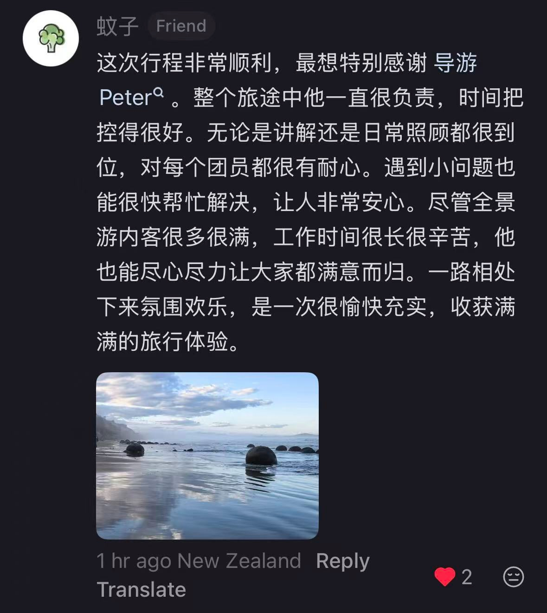
Peter 的核心优势之一
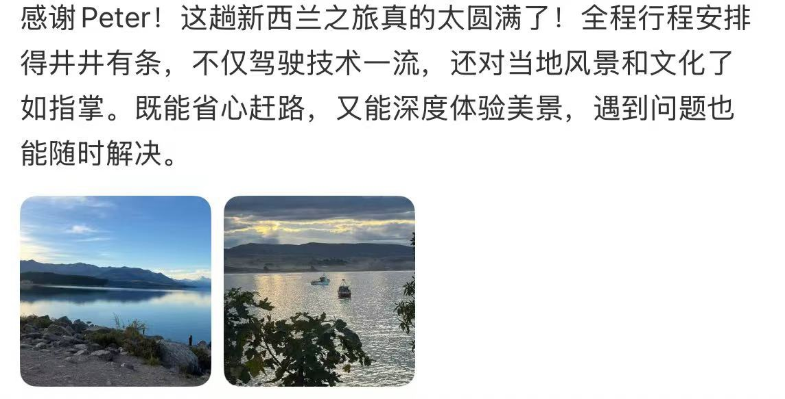
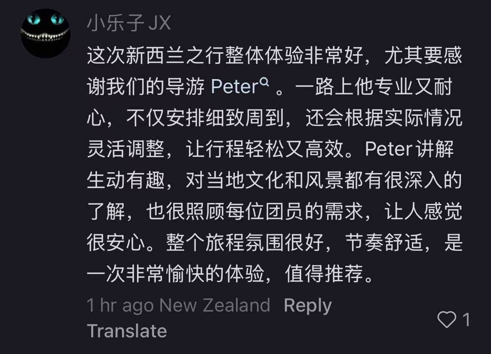
最能建立信任感
Travel Moments
凯库拉、特卡波、库克山、皇后镇……与客人一起走过的南岛。


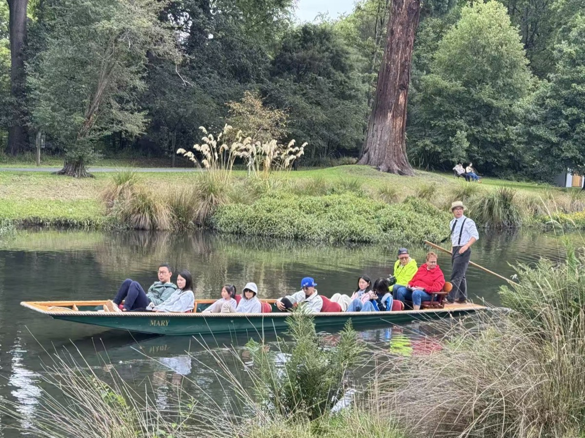
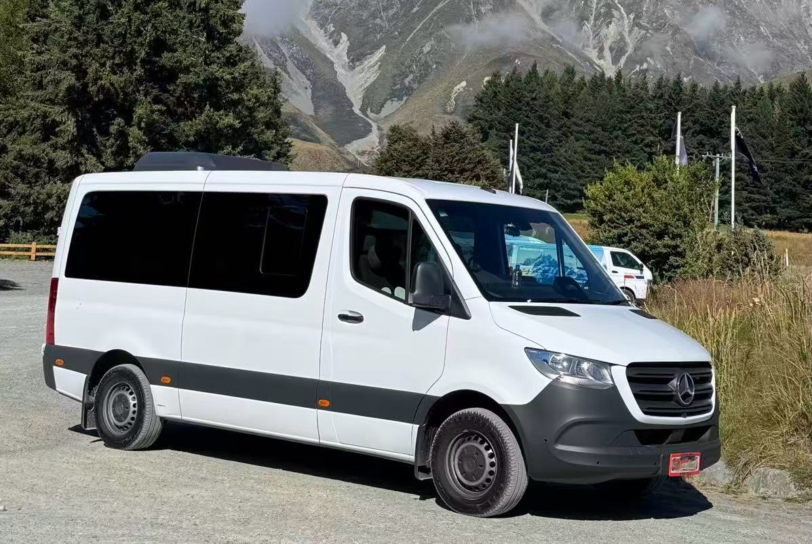
以上数据可根据实际运营情况调整更新。
Review Wall
小红书 · 微信 · Google Reviews · 游客反馈。后续可持续上传新的评价截图。
新增评价：复制下方任意 <figure class="media-slot media-slot--review"> 块，粘贴到评价墙末尾，替换 src 即可。
风景会被遗忘，
但一次舒服、安心、有温度的旅行，
往往会被记住很多年。